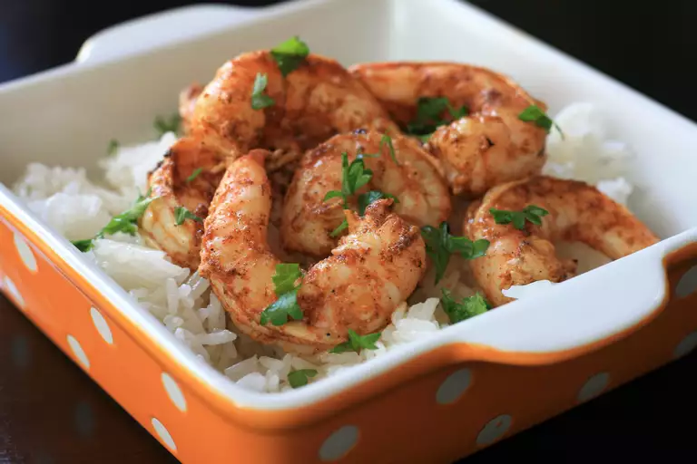

Home
Spicy Lime Grilled Shrimp

Description
Grilled shrimp with a lime base and some kick!
Ingredients
- 3 tablespoons Cajun seasoning (such as Emeril's Essence)
- 1 lime, juiced
- 1 tablespoon vegetable oil
- 1 pound peeled and deveined medium shrimp (30-40 per pound)
- ½ cup thinly sliced green onions
- 1 pinch cayenne pepper
Steps
- Mix together Cajun seasoning, lime juice, and oil in a resealable plastic bag. Add
shrimp, coat with marinade, squeeze out excess air, and seal the bag. Marinate
in the refrigerator for 20 minutes.
-
Preheat an outdoor grill for medium heat and lightly oil the grate.
-
Remove shrimp from marinade; shake off excess. Discard remaining marinade.
-
Cook shrimp on the preheated grill until bright pink on the outside and the meat
is no longer transparent in the center, about 2 minutes per side.